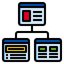

1. Web Development
- Basic knowledge of HTML and CSS for creating and styling web pages
- Familiarity with a programming language such as JavaScript for adding interactivity and
dynamic
features to web pages
- Understanding of web development concepts and the software development life cycle
- Strong problem-solving and debugging skills to troubleshoot and fix issues in web pages
- Ability to work well in a team and collaborate with other developers, designers, and
stakeholders
- Willingness to continue learning and expanding web development skills.
- Familiarity with responsive design principles and techniques to ensure websites are
optimized for various screen sizes
